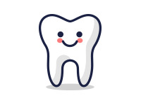

[In Dentistry]
-I have a toothache.
-The tooth hurts when food touches it.
-Any pressure on it is very painful.
-I have a wisdom tooth breaking through.
-The gum is bleeding.
-I want to have this tooth pulled out.
-I think i have a cavitiy.
-The filling of this tooth cavity fell out.
-It needs only a filling.
-I chipped my front tooth.
-I'd like to have my teeth cleaned.